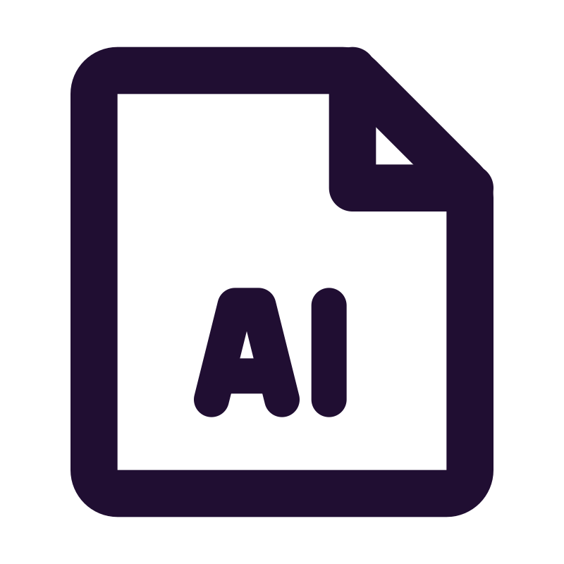

Profil
 Meine Herangehensweise an Softwareentwicklung
Meine Herangehensweise an Softwareentwicklung
Ich begann als Enthusiast für Clean Code, aber im Laufe der Zeit habe ich einen pragmatischen Ansatz übernommen. Mein Ziel ist es, Code zu schreiben, der effektiv funktioniert, wobei Lesbarkeit und Design gleichermaßen wichtig sind. Ich habe sowohl mit chaotischen Legacy-Systemen als auch mit gut strukturierten, gut durchdachten Codebasen gearbeitet und wertvolle Einblicke in beide Welten gewonnen (es gibt in beiden Fällen viel zu lernen). Während einige sagen, dass TDD tot ist, finde ich Wert in diesem Ansatz und nutze ihn, wenn er sinnvoll ist. Ich bevorzuge die Zusammenarbeit vor Ort anstelle von Remote-Arbeit, da ich den Austausch von Ideen auf persönlicher Ebene schätze – wodurch Pair Programming eine natürliche Wahl für mich ist.
 .NET
.NET
Mit über 4 Jahren beruflicher Erfahrung in .NET und C# habe ich Webanwendungen entwickelt, die mit Blazor erstellt und auf Azure bereitgestellt wurden, sowie robuste Authentifizierungs- und Autorisierungsmechanismen implementiert. Zusätzlich habe ich umfassende Erfahrung in der Entwicklung von Desktop-Anwendungen mit WPF und früheren Windows Forms. Und ja, ich habe MVVM ausgiebig verwendet.
 Datenbanken
Datenbanken
Ich habe umfassende Erfahrung im Entwerfen und Integrieren von Datenbanken, mit Spezialisierung auf SQL (SQL Server, MySQL und mehr) sowie NoSQL (Firebase) Systeme.
Ich nutze häufig ORMs wie Entity Framework und NHibernate, wenn erforderlich.
Mobile App-Entwicklung
Ich habe mobile Anwendungen entwickelt, entworfen und veröffentlicht, ursprünglich als Hobby, von denen einige sogar profitabel wurden. Meine Reise begann mit nativen Android-Apps, die mit Java erstellt wurden, aber ich habe es sehr genossen, hybride Lösungen mit Flutter zu entwickeln. Einige davon kannst du hier ansehen.
LLMs
Seit ihrem Aufkommen nutze ich große Sprachmodelle wie ChatGPT und Copilot, um die Produktivität bei verschiedenen Aufgaben zu steigern. Obwohl ich ihre bemerkenswerten Fähigkeiten anerkenne, bleibe ich vorsichtig, wenn es um die Abhängigkeit von ihnen bei der Softwareentwicklung geht, wo Präzision und Vertrauen in den Code von größter Bedeutung sind. Was ich auf jeden Fall in Zukunft tun möchte, ist, Systeme zu entwickeln, die LLMs nutzen – das wird sicher Spaß machen!
 Zusätzliche Fähigkeiten und Interessen
Zusätzliche Fähigkeiten und Interessen
Wie bereits erwähnt, bin ich ein leidenschaftlicher Linux-Nutzer, sowohl auf Desktop- als auch auf Serverumgebungen. Ich finde die CLI unglaublich benutzerfreundlich, wenn ich weiß, was ich tue, da ich mich auf die benötigten Informationen konzentrieren kann, ohne unnötigen Ballast. Wenn mich jemand nach meiner Lieblingssprache fragt, würde ich C sagen. Ich schreibe lieber Code in Texteditoren, wobei Sublime Text mein Favorit ist. Wenn Debugging erforderlich ist, verlasse ich mich auf Visual Studio oder Rider. Ich bin neugierig auf Vim, vielleicht wird das die nächste und letzte Option.
Zurück zur Startseite
Berufserfahrung
Bei DVGW Service & Consult entwickeln wir Softwarelösungen für Kunden und den internen Gebrauch, wobei wir auf den Microsoft-Technologiestack setzen. Unser Hauptfokus liegt auf .NET-Anwendungen, die auf Azure bereitgestellt werden, mit gelegentlicher Nutzung von Python und PHP. Wir verwalten große Datenbanken, hauptsächlich mit SQL Server und MySQL, und setzen oft ORMs wie EF-Core und NHibernate ein.
Ich arbeite mit einem Kollegen an der Modernisierung von Integra, bei der wir die Anwendung vom Desktop ins Web übertragen, neue Funktionen hinzufügen und die Benutzererfahrung verbessern. Dieses Projekt ist ein wichtiges Produkt für unsere Kunden und trägt maßgeblich zum Erfolg des Unternehmens bei.
Darüber hinaus bin ich allein verantwortlich für ein internes Projekt für das IT-Team, der Entwicklung und Pflege eines wichtigen Tools, das ihren Arbeitsalltag erleichtern soll.
Bei Teutologic Software arbeitete ich als Junior Softwareentwickler in folgenden Bereichen:
- Entwicklung und Integration von UI-Komponenten für die CAD-Anwendung Visiometa mit C#, .NET und WPF. Diese eigenständigen Tools wurden später in das System integriert und folgten dem MVVM-Muster. Beispiele umfassen einen benutzerdefinierten Farbwähler, ein dynamisches Menü zur Anzeige von Anwendungselementen mit komplexen Animationen oder eine Passworterstellungs-Komponente mit umfassenden Validierungsprüfungen.
- Mitwirkung bei der Erstellung einer Importfunktion für das proprietäre 3D-Dateiformat von Blender. Dies beinhaltete Reverse Engineering, um zu verstehen, wie eine spezifische Blender-Version 3D-Elemente (Meshes) speicherte und deren Import in unser CAD-System zu ermöglichen.
- Mitwirkung an der Erstellung unseres eigenen benutzerdefinierten Testframeworks, um die Softwarequalität sicherzustellen.
- Verwaltung von Aufgaben im Zusammenhang mit einem Cloud-Lizenzierungsserver für unser CAD-System.
- Nutzung von Bash-Skripten für Automatisierungsaufgaben.
Auch habe ich Junior-Programmierer betreut und deren Skill-Entwicklung unterstützt. Zudem arbeitete ich an der Recherche thermophysikalischer Materialeigenschaften für Simulationssoftware.
Ausbildung & Zertifikate
Universität Piräus
M.Sc. Informatik
Masterarbeit: Forschung zu Android-Netzwerk-Technologien und Entwicklung von DosDroid.
Udacity - Google
Android Developer Nanodegree
Projekt: Entwicklung der Android-App "Greek Podcasts". Nutzer können Podcasts in griechischer Sprache durchsuchen und anhören.
Universität Patras
B.A. Informatik und Massenmedien
Thesis: Entwicklung einer Touristenführer-App für eine griechische Insel.
Veröffentlichte Projekte
Unten sind einige der Projekte aufgeführt, die ich aus Spaß und als Hobby veröffentlicht habe, um meine Reise in der Erkundung verschiedener Technologien und Konzepte zu zeigen.

Rebetes: Wiederentdeckung der griechischen Rebetiko-Musik
Als leidenschaftlicher Verfechter der Bewahrung kulturellen Erbes durch Technologie habe ich die App "Rebetes" (griechisch Ρεμπέτες) entwickelt, um den Bedürfnissen professioneller Musiker gerecht zu werden, die in der faszinierenden Welt der griechischen Rebetiko-Musik tief verwurzelt sind.
Rebetiko, eine reiche musikalische Tradition, findet oft ihren Platz in lebhaften Bars und Tavernen, wo Musiker sich auf 4-5-stündige Sessions begeben. Angesichts der Herausforderung, ein umfangreiches Repertoire von über 2000 Liedern auswendig zu lernen, wurde die Rebetiko-App geboren, um der ultimative Begleiter für diese Musiker zu sein.
Hauptmerkmale:
- Offline-Zugänglichkeit: Die App bietet eine umfassende Sammlung von Rebetiko-Songtexten (fast alle), Künstlerinformationen einschließlich Komponisten, Sänger und Autoren sowie Musikdetails wie Tonleitern und Rhythmen. All diese wertvollen Informationen sind offline verfügbar, was während der Aufführungen eine Internetverbindung überflüssig macht.
- Intuitive Suche: Eine schnelle und benutzerfreundliche Suchfunktion ermöglicht es Musikern, spezifische Lieder schnell zu finden oder das umfangreiche Repertoire von Rebetiko zu erkunden.
- Playlist-Erstellung: Benutzer können zur Optimierung ihrer Aufführungen mühelos Playlists erstellen, die auf jede Session zugeschnitten sind, um ein nahtloses und eindringliches Musikerlebnis zu gewährleisten.
Technologie-Stack:
Die Rebetiko-App wurde mit Flutter und Dart entwickelt und läuft reibungslos auf Android- und iOS-Geräten. Ihre solide Grundlage bildet eine robuste SQLite-Datenbank für effiziente Speicherung. Python-Skripte wurden verwendet, um Informationen aus verschiedenen Online-Quellen zu extrahieren.
Verfügbarkeit:
Während die App auf Google Play vorgestellt wird, wird sie auch im App Store veröffentlicht, um auch iOS-Benutzer anzusprechen.
Google Play Store
LyricsLoom: Musik entschlüsseln mit Python und Beautiful Soup
LyricLoom ist eine Python-Anwendung, die für das Web-Scraping von Songtexten von einer bestimmten Website entwickelt wurde und die gesammelten Songinformationen in einer SQLite-Datenbank speichert.
Hauptmerkmale:
Das Projekt unterstützt mehrere Funktionen, einschließlich der Extraktion von Songtexten, Künstlern, Tags und anderen Metadaten. Benutzer können zum Projekt beitragen, und die Dokumentation bietet eine Anleitung zur Installation, Verwendung und Beitrag.
Quellcode
Memogame: Das liebenswerte Paar-Matching-Spiel
Tauchen Sie ein in die Welt von Memogame, einem faszinierenden Paar-Matching-Spiel, das im Google Play Store erhältlich ist. Schlagen Sie die Bestenlisten in über 200 verschiedenen verfügbaren Tracks.
Technologie-Stack:
Memogame wurde nativ in Java entwickelt und bietet Android-Benutzern ein nahtloses und optimiertes Spielerlebnis. Memogame verwendet Firebase, um Punktestände online zu speichern, sodass Spieler weltweit ihre Gedächtnisleistung zeigen und miteinander konkurrieren können.
Google Play Store Quellcode
DoSdroid: Die Macht des Einen
DoSdroid orchestriert die Verbindung und Synchronisierung mehrerer Mobilgeräte für koordinierte Denial-of-Service (DoS)-Angriffe gegen einen HTTP-Server.
Benutzer können HTTP-Server veröffentlichen, die zu einem bestimmten Zeitpunkt für einen Angriff zur Verfügung stehen. Andere Benutzer können sich dem Angriff anschließen, und wenn der geeignete Moment gekommen ist, initiieren sie gemeinsam den Angriff.
Haftungsausschluss:
Obwohl die Beschreibung der App einen DoS-Angriff erwähnt, liegt ihr eigentlicher Zweck in der Nutzung der kollektiven Kraft zahlreicher Geräte für ein gemeinsames Ziel. Das Projekt diente auch der Erkundung der Netzwerktechnologien von Android, einschließlich Bluetooth, NFC, Wi-Fi P2P usw., während seiner Entwicklung.
Verfügbarkeit:
Aufgrund ihrer einzigartigen Natur ist diese App nicht für die Veröffentlichung in beliebten Stores wie dem Google Play Store geeignet. Um die Anwendung zu nutzen, müssen Sie daher den Quellcode herunterladen und das Projekt selbst erstellen.
QuellcodeBildung & Zertifizierungen
Universität von Piräus
M.Sc. Informatik
Masterarbeit: Forschung zu Android-Netzwerktechnologien und Entwicklung von DoSdroid.
Udacity - Google
Android Developer Nanodegree
Projekt: Entwicklung der Android-App "Greek Podcasts". Benutzer können griechische Podcasts durchsuchen und anhören.
Universität von Patras
B.A. Informatik und Massenmedien
Thesis: Entwicklung einer Touristenführer-App für eine griechische Insel.